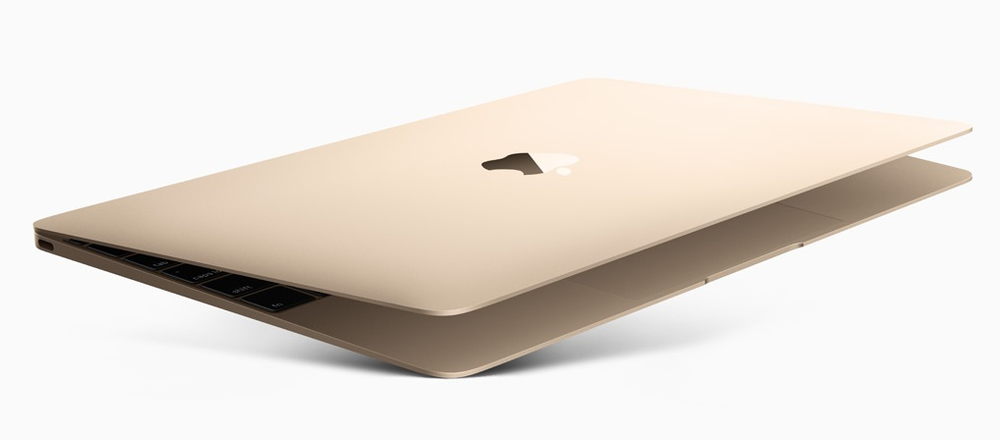
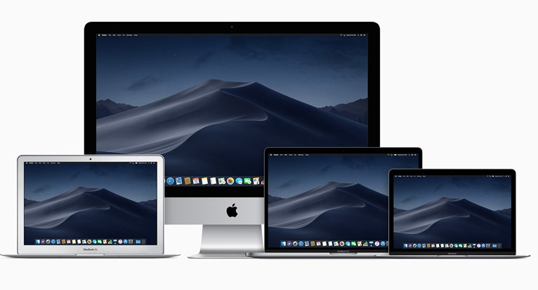

Când îţi cumperi un computer, îţi doreşti să reziste. Asta face Mac. Pentru că Mac este proiectat să fie pe cât de frumos, pe atât de fiabil şi de puternic.
Un PC nou este supraîncărcat cu tot soiul de aplicaţii. Dintre care multe nu te interesează şi nu-ţi sunt necesare. Un Mac, pe de altă parte, se livrează cu software grozav, pe care îl înveţi cu uşurinţă şi îl foloseşti cu plăcere.
Simplu şi intuitiv, însă incredibil de puternic. Acesta este OS X - motivul pentru care Mac e ceea ce e.
Thunderbolt 3 combină lățimea de bandă ultra-ridicată cu ultra-flexibilitatea standardului industriei USB‑C pentru a crea un port universal, turat la maximum. Acesta integrează transfer de date, încărcare și ieșire video într-un singur conector, oferind o rată de transfer de până la 40 Gb/s pentru o lățime de bandă de două ori mai mare față de Thunderbolt 2. Ambele modele MacBook Pro au până la patru porturi, astfel că ești foarte bine conectat pe oricare parte a notebookului. Dispozitivele existente se pot conecta ușor, cu ajutorul unui cablu sau adaptor. Iar Thunderbolt 3 are o mufă inversabilă, așa că indiferent cum îl conectezi, este întotdeauna pe partea corectă.
MacBook are un SSD fulgerător de rapid, cu viteze de citire secvențială de până la 3,2 GB/s. Modelul de 15 inchi este disponibil cu un SSD de până la 4 TB, iar MacBook Pro de 13 inchi cu Touch Bar este disponibil cu un SSD de până la 2 TB – suficient spațiu pentru a lua cu tine până și cele mai mari fișiere, precum galerii de poze de mari dimensiuni sau proiecte video mari. Pentru a putea să-l pornești, să lansezi aplicații multiple sau să imporți fișiere uriașe cât ai clipi. Iar cu cipul Apple T2, totul este criptat automat din mers.
Instalează Office pentru Mac şi rulează Word, Excel şi PowerPoint. Fişierele se deschid fără probleme pe un PC (şi invers). De asemenea, Mac rulează şi alte fişiere PC: fotografii, MP3, ZIP şi multe altele. Transferă-le pe noul tău Mac şi foloseşte-le imediat.
Apple se dedică proiectării de produse care au un impact minim asupra mediului înconjurător. De aceea, un Mac este eficient energetic, nu conţine o seamă de substanţe toxice şi are un grad ridicat de reciclabilitate.
Procesoarele Intel rapide fac parte din dotările standard ale fiecărui Mac, dând elan aplicaţiilor. Grafica puternică însufleţeşte cele mai recente jocuri 3D. Iar capabilităţile Wi-Fi 802.11n îţi oferă conectivitate wireless rapidă.